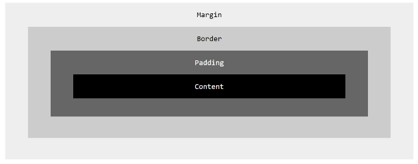

Hi, my name is Tina Namalima. I think I love technology, I mean, there are so many amazing things that we now can do because of technology. Look at us studying online, something which wasn't possible some years back. Amazing right?
So far i've leart about HTMl and CSS. I can now confidently use VS code to write a basic website in HTML and color it up and make it more appealing with CSS then push it to my github account. CSS is important because it brings design flexibility and interactivity and gives the developer control over the page layout allowing one to make precise section-wise changes.
The easiest way to explain the difference between paddings, borders and margins is using the Box model; see the figure below:
In the Box model above, consider the content of the box which is the position where texts and images appear. The padding is thus the space between the border and the content - i.e. the padding clears the area around the content and the border goes around the padding and content. The margin clears an area outside the border - it is the space between the border and the next element of the design and goes around i.e. it is the space outside the border and between it and the other elements.